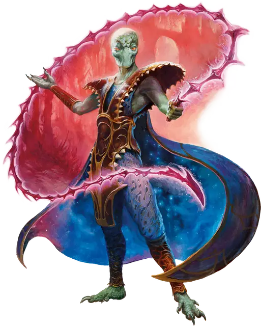

Ультролот
Ultroloth
Среднее Исчадие (Юголот), Нейтральное Злое

Класс Защиты 19 Инициатива +8 (18)
Хиты 221 (26к8 + 104)
Скорость 30 футов, Полёта 60 футов (парит)
| мод | спас | ||
|---|---|---|---|
| СИЛ | 19 | +4 | +4 |
| ЛОВ | 16 | +3 | +3 |
| ТЕЛ | 18 | +4 | +4 |
| мод | спас | ||
|---|---|---|---|
| ИНТ | 19 | +4 | +4 |
| МДР | 15 | +2 | +2 |
| ХАР | 18 | +4 | +4 |
Сопротивление урону Огонь, Холод, Электричество
Иммунитеты Кислота, Яд; Испуганный, Отравленный, Очарованный
Чувства пассивное Восприятие 17, Истинное зрение 120 футов
Языки Бездны, Инфернальный, Телепатия 120 фт.
Опасность 13 (10 000 опыта; БВ +5)
Особенности
Восстановление исчадия. Когда ультролот умирает за пределами Геенны, его тело растворяется в ихоре и в тот же миг заново возрождается со всеми Хитами где-то в Геенне.
Сопротивление магии. Ультролот совершает с Преимуществом спасброски от заклинаний и прочих магических эффектов.
Действия
Мультиатака. Ультролот использует Гипнотический взгляд и совершает две атаки Ртутным кнутом.
Ртутный кнут. Бросок рукопашной атаки: +9, досягаемость 15 фт. Попадание: 25 (6к6 + 4) Силового урона, и ультролот может телепортировать цель на расстояние до 10 футов в видимое им незанятное пространство не в воздухе.
Гипнотический взгляд. Спасбросок Мудрости: Сл 17, каждое существо в 30-футовом Конусе. Провал: 10 (3к6) Психического урона, и цель Ошеломлена до начала следующего хода ультролота. Успех: Цель становится невосприимчива к Гипнотическому взгляду этого ультролота на 24 часа.
Сотворение заклинаний. Ультролот сотворяет одно из следующих заклинаний, не нуждаясь в Материальных компонентах (заклинательная характеристика — Интеллект, Сл спасброска заклинаний 17):
Неограниченно: Обнаружение магии, Подсматривание, Смена обличья
1/день каждое: Огненная стена, Огненный шар, версия 5-го уровня, Переносящая дверь
Бонусные действия
Коварство исчадия (Перезарядка 4–6). Ультролот сотворяет Внушение, Невидимость (только на себя), Рассеивание магии или Туманный шаг, не нуждаясь в Материальных компонентах (заклинательная характеристика — та же, что для Сотворения заклинаний).
Бонус мастерства +5
Среда обитания Нижние планы
Сокровища Оружейные
Ультролот
Юголот интриг и контроля
С невероятным терпением и дьявольской хитростью ультролоты манипулируют как смертными, так и своими собратьями-юголотами, стремясь накапливать власть и сеять страдания. Эти зловещие кукловоды часто действуют сообща с другими юголотами, но способны принудить к служению почти любое существо. Если же принуждение не срабатывает, ультролоты пускают в ход жуткий взгляд и врождённую магию, гипнотизируя или очаровывая цель.
Ультролоты неустанно плетут замыслы вселенского масштаба. Совершите бросок по таблице «Заговоры ультролотов» для вдохновения или определите сами столь неописуемое злодейство.
Заговоры ультролотов
| к6 | Ультролот замышляет… |
| 1 | Убедить культистов, что их бог от них отвернулся. |
| 2 | Дестабилизировать целую страну и править хаосом. |
| 3 | Вызвать катастрофу и взять в заложники целый мир. |
| 4 | Разжечь вражду между бессмертными армиями и продавать магическое оружие обеим сторонам. |
| 5 | Похитить изобретение и убить всех, кто о нём знает. |
| 6 | Обрушить демонические орды на земли врага. |